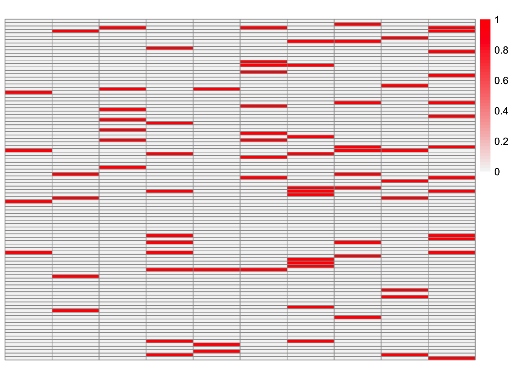

ebmfcov_init_comparison_sparse_overlapping
Annie Xie
2025-09-09
Last updated: 2025-09-10
Checks: 7 0
Knit directory: covariance_decomps_dsc/
This reproducible R Markdown analysis was created with workflowr (version 1.7.1). The Checks tab describes the reproducibility checks that were applied when the results were created. The Past versions tab lists the development history.
Great! Since the R Markdown file has been committed to the Git repository, you know the exact version of the code that produced these results.
Great job! The global environment was empty. Objects defined in the global environment can affect the analysis in your R Markdown file in unknown ways. For reproduciblity it’s best to always run the code in an empty environment.
The command set.seed(20250203) was run prior to running
the code in the R Markdown file. Setting a seed ensures that any results
that rely on randomness, e.g. subsampling or permutations, are
reproducible.
Great job! Recording the operating system, R version, and package versions is critical for reproducibility.
Nice! There were no cached chunks for this analysis, so you can be confident that you successfully produced the results during this run.
Great job! Using relative paths to the files within your workflowr project makes it easier to run your code on other machines.
Great! You are using Git for version control. Tracking code development and connecting the code version to the results is critical for reproducibility.
The results in this page were generated with repository version fce5fb0. See the Past versions tab to see a history of the changes made to the R Markdown and HTML files.
Note that you need to be careful to ensure that all relevant files for
the analysis have been committed to Git prior to generating the results
(you can use wflow_publish or
wflow_git_commit). workflowr only checks the R Markdown
file, but you know if there are other scripts or data files that it
depends on. Below is the status of the Git repository when the results
were generated:
Ignored files:
Ignored: .DS_Store
Ignored: .Rhistory
Ignored: data/.DS_Store
Ignored: data/adclus_cov_comp_dsc_ex/.DS_Store
Ignored: data/adclus_same_init_dsc_ex/.DS_Store
Note that any generated files, e.g. HTML, png, CSS, etc., are not included in this status report because it is ok for generated content to have uncommitted changes.
These are the previous versions of the repository in which changes were
made to the R Markdown
(analysis/ebmfcov_init_comparison_sparse_overlapping.Rmd)
and HTML
(docs/ebmfcov_init_comparison_sparse_overlapping.html)
files. If you’ve configured a remote Git repository (see
?wflow_git_remote), click on the hyperlinks in the table
below to view the files as they were in that past version.
| File | Version | Author | Date | Message |
|---|---|---|---|---|
| Rmd | fce5fb0 | Annie Xie | 2025-09-10 | Investigate EBMFcov in sparse overlapping setting |
Introduction
In this analysis, I am interested in comparing EBMFcov with the greedy initialization and EBMFcov with the point-Laplace plus splitting initialization in the sparse, overlapping setting. From the DSC results, I found that the point-Laplace plus splitting initialization performed worse (a different trend from what we saw in the other simulation settings). I want to better understand why this occurs. Ideally, the point-Laplace initialization would not result in worse performance.
Takeaways
These are my main takeaways from this analysis:
- Part of the reason why the point-Laplace initialization performs
worse is it adds extra factors. When given the correct number of
components, the method does recover the loadings matrix. But when given
more, the method returns extra factors. In the example I explored, one
of the true factors was split across two of the estimated factors.
- The greedy-based initialization does a better job at picking out the number of components. When given a larger \(K\), the method will add essentially trivial factors. This contributes to the method’s better performance. This initialization strategy also seems to do a better job at obtaining close estimates to most of the true factors.
library(dplyr)
library(ggplot2)
library(pheatmap)
library(flashier)source('code/visualization_functions.R')permute_L <- function(est, truth){
K_est <- ncol(est)
K_truth <- ncol(truth)
n <- nrow(est)
#if estimates don't have same number of columns, try padding the estimate with zeros and make cosine similarity zero
if (K_est < K_truth){
est <- cbind(est, matrix(rep(0, n*(K_truth-K_est)), nrow = n))
}
if (K_est > K_truth){
truth <- cbind(truth, matrix(rep(0, n*(K_est - K_truth)), nrow = n))
}
#normalize est and truth
norms_est <- apply(est, 2, function(x){sqrt(sum(x^2))})
norms_est[norms_est == 0] <- Inf
norms_truth <- apply(truth, 2, function(x){sqrt(sum(x^2))})
norms_truth[norms_truth == 0] <- Inf
est_normalized <- t(t(est)/norms_est)
truth_normalized <- t(t(truth)/norms_truth)
#compute matrix of cosine similarities
cosine_sim_matrix <- abs(crossprod(est_normalized, truth_normalized))
assignment_problem <- lpSolve::lp.assign(t(cosine_sim_matrix), direction = "max")
perm <- apply(assignment_problem$solution, 1, which.max)
return(est[,perm])
}True Loadings
group_overlap_1 <- readRDS('data/group_overlap_1.rds')This is a heatmap of the true loadings matrix:
plot_heatmap(group_overlap_1$true_L)
EBMFcov with Greedy-based Initialization
group_overlap_1_ebmfcov_diag_1 <- readRDS("data/adclus_cov_comp_dsc_ex/group_overlap_1_ebmfcov_diag_1.rds")ebmfcov_L_permuted <- permute_L(group_overlap_1_ebmfcov_diag_1$est_L, group_overlap_1$true_L)This is a heatmap of the estimated loadings matrix:
plot_heatmap(ebmfcov_L_permuted)
This is the correlation matrix:
ebmfcov_corr_mat <- cor(ebmfcov_L_permuted, group_overlap_1$true_L)
ebmfcov_corr_mat [,1] [,2] [,3] [,4] [,5]
[1,] 0.99838759 -0.04675378 -0.0559114944 0.115128308 -0.04159948
[2,] -0.04678199 0.99898985 -0.0628770011 -0.076394663 -0.04678199
[3,] -0.05597966 -0.06291570 0.9996047599 -0.091414399 0.13804600
[4,] 0.09657113 -0.07640329 -0.0913684846 0.999102696 0.08959875
[5,] -0.04163365 -0.04679218 0.1434754797 0.103468918 0.99920754
[6,] -0.06795096 -0.07637029 0.1845673635 -0.010983681 0.08511119
[7,] -0.07531005 -0.08464119 -0.1012199431 0.190767961 -0.07531005
[8,] 0.10372104 0.07164829 -0.0913776532 -0.003363806 -0.06798715
[9,] 0.14852371 0.10054537 -0.0807716306 0.022932361 -0.06009602
[10,] 0.08666149 0.06268838 -0.0008749797 0.174615774 -0.07876139
[,6] [,7] [,8] [,9] [,10]
[1,] -0.067931671 -0.07525630 0.088372556 0.11274764 0.08452082
[2,] -0.076394663 -0.08463180 0.063507812 0.10323053 0.04954563
[3,] 0.171976185 -0.10127101 -0.091414399 -0.08086991 0.01268128
[4,] -0.008081186 0.18845321 0.007456104 0.02308864 0.16076641
[5,] 0.103468918 -0.07531810 -0.067987462 -0.06014523 -0.07884282
[6,] 0.998671121 -0.02046728 -0.110963458 -0.09816402 0.07953202
[7,] -0.025322754 0.99910068 0.082981658 -0.10879517 -0.04695310
[8,] -0.111022550 0.07647781 0.999202954 0.02581113 0.07996687
[9,] -0.098136384 -0.10871778 0.038133451 0.99839001 -0.11380553
[10,] 0.051895250 -0.05411045 0.070943749 -0.11378108 0.99814004diag(ebmfcov_corr_mat) [1] 0.9983876 0.9989898 0.9996048 0.9991027 0.9992075 0.9986711 0.9991007
[8] 0.9992030 0.9983900 0.9981400We see that all of the estimated factors are highly correlated with one of the true factors (note the mapping of estimated to true factors is 1-1, so we do not have two estimated factors mapping to the same true factor).
I also want to note that in visualization, some of the factors appear to have lower loading value than the others. The loadings matrix has not been rescaled such that \(\frac{1}{p}YY' \approx LL'\). So my guess is this factor has a higher loading value in the other matrix (the other estimate of L), and if you were to rescale the matrix, then you wouldn’t see the difference.
EBMFcov with point-Laplace fit Initialization
group_overlap_1_laplace_split_ebmfcov_diag_1 <- readRDS("data/adclus_cov_comp_dsc_ex/group_overlap_1_laplace_split_ebmfcov_diag_1.rds")laplace_init_ebmfcov_L_permuted <- permute_L(group_overlap_1_laplace_split_ebmfcov_diag_1$est_L, group_overlap_1$true_L)This is a heatmap of the estimated loadings matrix:
plot_heatmap(laplace_init_ebmfcov_L_permuted)
This is the correlation matrix between the estimated loadings and true loadings:
laplace_ebmfcov_corr_mat <- cor(laplace_init_ebmfcov_L_permuted, group_overlap_1$true_L)
laplace_ebmfcov_corr_mat [,1] [,2] [,3] [,4] [,5] [,6]
[1,] 0.99837161 -0.04675303 -0.055910599 0.11464922 -0.04159882 -0.06793058
[2,] -0.04677002 0.99873427 -0.062860915 -0.07637512 -0.04677002 -0.07637512
[3,] -0.05597937 -0.06291538 0.999599535 -0.09141392 0.13795069 0.17199134
[4,] 0.09708803 -0.07642102 -0.091389680 0.99933447 0.09287163 -0.00595880
[5,] -0.04163339 -0.04679189 0.143679042 0.10289209 0.99920144 0.10289209
[6,] -0.06795372 -0.07637339 0.184168442 -0.01097481 0.08512891 0.99871171
[7,] -0.07530876 -0.08463974 -0.101218210 0.18910559 -0.07530876 -0.02534870
[8,] 0.14797388 0.03207636 -0.082878078 -0.10069569 -0.06166326 -0.10069569
[9,] 0.14792750 0.09878656 -0.080808661 0.02181662 -0.06012357 -0.09818137
[10,] 0.08449196 0.06118548 -0.004749712 0.17543379 -0.07874208 0.05930955
[11,] 0.02229574 -0.11081483 -0.133953669 0.56724609 -0.09792212 -0.16161631
[12,] -0.04417392 0.11159248 -0.059371654 0.17083256 -0.04417392 -0.07213572
[13,] 0.35199568 0.19150490 -0.069831713 0.13239621 -0.11899211 -0.04482371
[14,] 0.22745609 0.02542820 -0.135276427 0.13831405 -0.10064899 -0.16435537
[15,] 0.24228228 0.06014691 0.020790278 0.08097687 -0.07746727 -0.02018345
[,7] [,8] [,9] [,10]
[1,] -0.075255092 0.088564583 0.11295974 0.084093743
[2,] -0.084610145 0.062565306 0.10541239 0.047616562
[3,] -0.101270482 -0.091413921 -0.08086948 0.012702416
[4,] 0.188663281 0.005387176 0.02155131 0.160268029
[5,] -0.075317642 -0.067987046 -0.06014486 -0.078842335
[6,] -0.021228406 -0.110967968 -0.09816801 0.079173524
[7,] 0.999083575 0.080084832 -0.10879331 -0.048065541
[8,] 0.133790249 0.906261188 0.06234346 0.144438114
[9,] -0.108767626 0.037717014 0.99884772 -0.113857702
[10,] -0.049819603 0.074617034 -0.11375319 0.997930854
[11,] 0.372080298 0.198440112 0.06136606 0.009617434
[12,] -0.079913636 0.649221445 -0.06381499 -0.083653411
[13,] 0.134642980 0.345865453 -0.08816693 0.622191069
[14,] -0.002236935 -0.004457526 0.58437343 -0.007903499
[15,] -0.140100685 -0.027664215 -0.11191138 0.766686894diag(laplace_ebmfcov_corr_mat) [1] 0.9983716 0.9987343 0.9995995 0.9993345 0.9992014 0.9987117 0.9990836
[8] 0.9062612 0.9988477 0.9979309We see that the 8th factor has the lowest correlation, with a correlation of 0.906. It seems like the effect of the true 8th factor was split between the estimated 8th factor and 12th factor.
plot(group_overlap_1$true_L[,8], laplace_init_ebmfcov_L_permuted[,8], xlab = 'True Factor', ylab = 'Estimated Factor')plot(group_overlap_1$true_L[,8], laplace_init_ebmfcov_L_permuted[,8] + laplace_init_ebmfcov_L_permuted[,12], xlab = 'True Factor', ylab = '8th + 12th Estimated Factors')Perhaps the point-Laplace prior led to shrinkage of that factor and an additional factor was needed to capture the larger effects (that were shrunk)?
Investigating the point-Laplace Fit
flash_laplace_fit <- flash_init(group_overlap_1$data$YYt) |>
flash_greedy(Kmax = 10, ebnm_fn = ebnm::ebnm_point_laplace) |>
flash_backfit() |>
flash_nullcheck()Adding factor 1 to flash object...
Adding factor 2 to flash object...
Adding factor 3 to flash object...
Adding factor 4 to flash object...
Adding factor 5 to flash object...
Adding factor 6 to flash object...
Adding factor 7 to flash object...
Adding factor 8 to flash object...
Adding factor 9 to flash object...
Adding factor 10 to flash object...
Wrapping up...
Done.
Backfitting 10 factors (tolerance: 1.49e-04)...
Difference between iterations is within 1.0e+02...
Difference between iterations is within 1.0e+01...
Difference between iterations is within 1.0e+00...
Difference between iterations is within 1.0e-01...
Difference between iterations is within 1.0e-02...
Difference between iterations is within 1.0e-03...
Difference between iterations is within 1.0e-04...
Wrapping up...
Done.
Nullchecking 10 factors...
Done.flash_laplace_fit_scaled <- ldf(flash_laplace_fit)
flash_laplace_fit_scaled_L <- flash_laplace_fit_scaled$L %*% diag(sqrt(flash_laplace_fit_scaled$D))This is a heatmap of the estimated loadings:
plot_heatmap(flash_laplace_fit_scaled_L, colors_range = c('blue','gray96','red'),
brks = seq(-max(abs(flash_laplace_fit_scaled_L)), max(abs(flash_laplace_fit_scaled_L)), length.out = 50))The point-Laplace fit is able to pick out some of the structures. In particular, it identified true factors 1, 2, 3, and 5. However, the other estimated factors seem to contain combinations of effects.
Note: I was curious if more backfitting would help the point-Laplace fit find the sparser representation (since it does prefer sparser representations). I tried it, and additional backfitting did not lead to a drastically different representation.
Initialization for point-Laplace plus splitting EBMFcov
Splitting the point-Laplace fit from the previous section gives us the initialization.
group_overlap_1_pt_laplace_split_1 <- readRDS("data/pt_laplace_split_init_ex/group_overlap_1_pt_laplace_split_1.rds")init_L_permuted <- permute_L(group_overlap_1_pt_laplace_split_1$init_L, group_overlap_1$true_L)This is a heatmap of the initialization:
plot_heatmap(init_L_permuted)This is the correlation matrix between the estimated loadings and true loadings:
laplace_split_ebmfcov_init_corr_mat <- cor(init_L_permuted, group_overlap_1$true_L)
laplace_split_ebmfcov_init_corr_mat [,1] [,2] [,3] [,4] [,5]
[1,] 0.99804417 -0.046649955 -0.05568809 0.10977109 -0.041643872
[2,] -0.04658525 0.998811801 -0.06279869 -0.07634382 -0.046801932
[3,] -0.05162475 -0.062498070 0.99918163 -0.09177104 0.131518384
[4,] 0.14614220 -0.067639543 -0.06808113 0.90899183 0.029726592
[5,] -0.04168508 -0.046785725 0.14404137 0.09837804 0.999128729
[6,] -0.08793267 -0.095080899 0.09444930 0.05262260 0.076328650
[7,] -0.07012152 -0.078726554 -0.09375186 0.10686978 -0.046329849
[8,] 0.06870885 0.031954619 -0.03679394 -0.13054226 -0.095001614
[9,] 0.09332111 0.046139384 -0.05987233 0.19741681 0.007853539
[10,] 0.03445423 0.145953842 -0.09595004 0.06005027 -0.069030954
[11,] 0.07520811 -0.040508658 -0.12522109 0.72296661 -0.027437887
[12,] -0.10377749 0.082551247 -0.06261460 -0.09896168 -0.103849233
[13,] -0.02311690 -0.025981155 -0.02991559 -0.03094083 0.499644892
[14,] -0.06196841 0.071566300 -0.03544466 0.46443547 0.107232469
[15,] -0.05088554 -0.056672966 0.64312656 -0.08527015 0.299132781
[16,] 0.04764284 0.006959081 0.11339464 0.09365568 0.003440302
[17,] -0.04734332 -0.052538609 -0.06363146 -0.07386552 0.253969821
[18,] 0.25629092 0.112932407 -0.14011215 0.09024449 -0.105686184
[19,] -0.07263718 -0.104183629 -0.09642427 -0.06565008 -0.053555245
[,6] [,7] [,8] [,9] [,10]
[1,] -0.067890713 -0.07526627 0.083866228 0.10781730 0.07978898
[2,] -0.076334419 -0.08466418 0.062108162 0.10626137 0.05027025
[3,] 0.174842316 -0.10168300 -0.091757888 -0.08115710 0.01532284
[4,] -0.044640605 0.13084877 -0.106134728 0.04862629 0.18970792
[5,] 0.098397391 -0.07533256 -0.068056772 -0.06021483 -0.07892154
[6,] 0.894520908 0.33453223 -0.143490529 -0.12724525 -0.04958558
[7,] -0.114863475 0.90002292 0.108322241 -0.10078194 -0.13308998
[8,] 0.205150730 0.24993335 0.888427293 -0.01829912 0.10186770
[9,] 0.248434592 -0.05964583 0.001886558 0.89637918 -0.17198534
[10,] -0.117018587 -0.06217255 0.109663358 -0.10504428 0.86874297
[11,] -0.006130209 0.62646748 0.341400019 -0.08060974 0.45928136
[12,] 0.086544699 0.49550150 -0.172741224 0.21771611 0.43953397
[13,] -0.025002592 -0.03692951 -0.035919693 -0.02264138 -0.04290652
[14,] 0.002247769 -0.11578567 0.516865403 -0.04570424 -0.12105771
[15,] -0.076568544 -0.09446427 -0.085270153 -0.06245273 -0.09888498
[16,] 0.615177301 -0.17704245 0.001881934 -0.13964250 0.76441308
[17,] -0.070675894 -0.06231542 0.174407531 -0.04340973 0.16002317
[18,] -0.173227253 -0.19163014 0.488201842 0.66280567 0.40619560
[19,] 0.020284489 -0.00977951 0.173803547 0.21455948 -0.07704762diag(laplace_split_ebmfcov_init_corr_mat) [1] 0.9980442 0.9988118 0.9991816 0.9089918 0.9991287 0.8945209 0.9000229
[8] 0.8884273 0.8963792 0.8687430Paying special attention to true factor 8, we see that the best matching estimate does not exactly look like the true factor 8. Some entries which should be zero instead have small loadings values. Furthermore, one of the entries which should have 1 instead has a relatively small loading value.
plot(group_overlap_1$true_L[,8], init_L_permuted[,8], xlab = 'True Factor', ylab = 'Estimated Factor')
Overall, many of the estimated factors have additional non-zero entries that we would want to be shrunk to zero. In addition, some of the estimated factors are missing a couple non-zero entries. I’m guessing these entries got captured in another factor instead.
Give point-Laplace Initialized EBMFcov K/2
This is effectively giving the method the true number of components. I am curious to see if this is able to recover the true loadings. Since the issue before seemed to be that the effect was split among multiple factors and in this case, the method is being told the correct number of factors, I think it should do a better job in this case.
laplace_split_initialization <- function(S, Kmax, verbose = 2, backfit_maxiter = 500, backfit_tol = NULL){
# change backfit_tol = NULL as default setting
# backfitting is important in the tree setting
# fit point-laplace fit with flash
flash_laplace_fit <- flash_init(data = S, var_type = 0) |>
flash_set_verbose(verbose = verbose) |>
flash_greedy(Kmax = Kmax, ebnm_fn = ebnm::ebnm_point_laplace) |>
flash_backfit(maxiter = backfit_maxiter, tol = backfit_tol) |>
flash_nullcheck()
# rescale fit so that L and F are of the same scale
flash_laplace_fit_scaled <- ldf(flash_laplace_fit, 'i')
LL <- flash_laplace_fit_scaled$L
##FF <- flash_laplace_fit_scaled$F
# split into positive and negative components
LL <- cbind(pmax(LL, 0), pmax(-LL, 0))
##FF <- cbind(pmax(FF, 0), pmax(-FF, 0))
# remove columns of zeros
idx.nonzero <- apply(LL, 2, function(x){return(sum(x^2))}) > 10^(-10)
LL <- LL[, idx.nonzero]
# refit weights by least squares
n <- nrow(S)
llt_vec <- matrix(rep(0, ncol(LL)*n*n), ncol = ncol(LL))
for (i in 1:ncol(LL)){
llt_vec[,i] <- c(LL[,i]%*%t(LL[,i]))
}
nnlm_fit <- NNLM::nnlm(llt_vec, as.matrix(c(S), ncol = 1), alpha = c(0,0,0))
indices_keep <- (nnlm_fit$coefficients > 0)
LL_scaled <- LL[,indices_keep] %*% diag(sqrt(nnlm_fit$coefficients[indices_keep]))
return(LL_scaled)
}
laplace_split_cov_fit <- function(covmat, ebnm_fn = ebnm::ebnm_point_laplace, Kmax = 1000,
verbose.lvl = 0, backfit_maxiter = 500,
backfit_tol = 3.81e-04) {
# laplace-split initialization
init_L <- laplace_split_initialization(covmat, Kmax = Kmax)
# ebmfcov_diag fit
fl <- flash_init(covmat, var_type = 0) |>
flash_set_verbose(verbose.lvl) |>
flash_factors_init(list(init_L, init_L), ebnm_fn = ebnm_fn)
s2 <- max(0, mean(diag(covmat) - diag(fitted(fl))))
s2_diff <- Inf
while(s2 > 0 && abs(s2_diff - 1) > 1e-4) {
covmat_minuss2 <- covmat - diag(rep(s2, ncol(covmat)))
fl <- fl |>
flash_update_data(covmat_minuss2) |>
flash_set_verbose(verbose.lvl) |>
flash_backfit(maxiter = backfit_maxiter, tol = backfit_tol) |>
flash_nullcheck()
old_s2 <- s2
s2 <- max(0, mean(diag(covmat) - diag(fitted(fl))))
s2_diff <- s2 / old_s2
}
return(list(fl=fl, s2 = s2))
}laplace_init_ebmfcov_halfK_fit <- laplace_split_cov_fit(covmat = group_overlap_1$data$YYt,
ebnm_fn = ebnm::ebnm_generalized_binary,
Kmax = 5)Adding factor 1 to flash object...
Optimizing factor...
Factor successfully added. Objective: -2073.351
Adding factor 2 to flash object...
Optimizing factor...
Factor successfully added. Objective: -1189.264
Adding factor 3 to flash object...
Optimizing factor...
Factor successfully added. Objective: -290.972
Adding factor 4 to flash object...
Optimizing factor...
Factor successfully added. Objective: 467.432
Adding factor 5 to flash object...
Optimizing factor...
Factor successfully added. Objective: 1409.040
Wrapping up...
Done.
Backfitting 5 factors (tolerance: 1.49e-04)...
Difference between iterations is within 1.0e+01...
Difference between iterations is within 1.0e+00...
Difference between iterations is within 1.0e-01...
Difference between iterations is within 1.0e-02...
Difference between iterations is within 1.0e-03...
Difference between iterations is within 1.0e-04...
Backfit complete. Objective: 1686.664
Wrapping up...
Done.
Nullchecking 5 factors...
No factor can be removed without significantly decreasing the objective.
Done.laplace_init_ebmfcov_halfK_fit_scaled <- ldf(laplace_init_ebmfcov_halfK_fit$fl)
laplace_init_ebmfcov_halfK_fit_scaled_L <- laplace_init_ebmfcov_halfK_fit_scaled$L %*% diag(sqrt(laplace_init_ebmfcov_halfK_fit_scaled$D))laplace_init_ebmfcov_halfK_fit_scaled_L_permuted <- permute_L(laplace_init_ebmfcov_halfK_fit_scaled_L, group_overlap_1$true_L)This is a heatmap of the estimated loadings:
plot_heatmap(laplace_init_ebmfcov_halfK_fit_scaled_L_permuted, colors_range = c('blue','gray96','red'),
brks = seq(-max(abs(laplace_init_ebmfcov_halfK_fit_scaled_L_permuted)), max(abs(laplace_init_ebmfcov_halfK_fit_scaled_L_permuted)), length.out = 50))This is the correlation matrix between the estimated loadings and true loadings:
laplace_init_ebmfcov_halfK_corr_mat <- cor(laplace_init_ebmfcov_halfK_fit_scaled_L_permuted, group_overlap_1$true_L)
laplace_init_ebmfcov_halfK_corr_mat [,1] [,2] [,3] [,4] [,5]
[1,] 0.99838768 -0.04675379 -0.0559114990 0.115128187 -0.04159949
[2,] -0.04678199 0.99898988 -0.0628770030 -0.076394665 -0.04678199
[3,] -0.05597966 -0.06291571 0.9996047787 -0.091414400 0.13804680
[4,] 0.09657198 -0.07640329 -0.0913684869 0.999102721 0.08959830
[5,] -0.04163365 -0.04679218 0.1434750018 0.103469420 0.99920754
[6,] -0.06795096 -0.07637029 0.1845679010 -0.010983472 0.08511150
[7,] -0.07531005 -0.08464119 -0.1012199427 0.190768165 -0.07531005
[8,] 0.10372129 0.07164831 -0.0913776533 -0.003363826 -0.06798715
[9,] 0.14852380 0.10054545 -0.0807716299 0.022932318 -0.06009602
[10,] 0.08666138 0.06268834 -0.0008749532 0.174615757 -0.07876139
[,6] [,7] [,8] [,9] [,10]
[1,] -0.067931677 -0.07525630 0.088373107 0.11274825 0.08452071
[2,] -0.076394665 -0.08463180 0.063507962 0.10323072 0.04954573
[3,] 0.171976353 -0.10127101 -0.091414400 -0.08086991 0.01268139
[4,] -0.008081481 0.18845353 0.007455989 0.02308856 0.16076734
[5,] 0.103469420 -0.07531810 -0.067987462 -0.06014523 -0.07884282
[6,] 0.998671107 -0.02046727 -0.110963456 -0.09816401 0.07953236
[7,] -0.025322819 0.99910068 0.082981939 -0.10879517 -0.04695316
[8,] -0.111022551 0.07647777 0.999202955 0.02581131 0.07996681
[9,] -0.098136383 -0.10871778 0.038133510 0.99839000 -0.11380553
[10,] 0.051895173 -0.05411042 0.070944082 -0.11378108 0.99814004diag(laplace_init_ebmfcov_halfK_corr_mat) [1] 0.9983877 0.9989899 0.9996048 0.9991027 0.9992075 0.9986711 0.9991007
[8] 0.9992030 0.9983900 0.9981400When given the correct number of components, the method is able to recover the loadings matrix. So perhaps the issue is the fact that the point-Laplace plus initialization yields a greater number of factors than the greedy initialization (which was given the correct number of components).
Investigating the EBMFcov Initialization
In this section, I investigate EBMFcov’s initialization to see if it yields a better initialization for fitting \(LL' + D\).
flash_gb_fit <- flash_init(group_overlap_1$data$YYt) |>
flash_greedy(Kmax = 10, ebnm_fn = ebnm::ebnm_generalized_binary) |>
flash_backfit()Adding factor 1 to flash object...
Adding factor 2 to flash object...
Adding factor 3 to flash object...
Adding factor 4 to flash object...
Adding factor 5 to flash object...
Adding factor 6 to flash object...
Adding factor 7 to flash object...
Adding factor 8 to flash object...
Adding factor 9 to flash object...
Adding factor 10 to flash object...
Wrapping up...
Done.
Backfitting 10 factors (tolerance: 1.49e-04)...
Difference between iterations is within 1.0e+03...
Difference between iterations is within 1.0e+02...
Difference between iterations is within 1.0e+01...
Difference between iterations is within 1.0e+00...
Difference between iterations is within 1.0e-01...
Difference between iterations is within 1.0e-02...
Wrapping up...
Done.flash_gb_fit_scaled <- ldf(flash_gb_fit)
flash_gb_fit_scaled_L <- flash_gb_fit_scaled$L %*% diag(sqrt(flash_gb_fit_scaled$D))flash_gb_fit_scaled_L_permuted <- permute_L(flash_gb_fit_scaled_L, group_overlap_1$true_L)This is a heatmap of the initialization:
plot_heatmap(flash_gb_fit_scaled_L_permuted)This is the correlation matrix between the estimated loadings and true loadings:
ebmfcov_init_corr_mat <- cor(flash_gb_fit_scaled_L_permuted, group_overlap_1$true_L)
ebmfcov_init_corr_mat [,1] [,2] [,3] [,4] [,5]
[1,] 0.99873698 -0.04677014 -0.055931061 0.112194074 -0.04161404
[2,] -0.04678927 0.99914543 -0.062886794 -0.076406561 -0.04678927
[3,] -0.02914965 -0.03274320 -0.039178974 -0.047539331 -0.02905452
[4,] 0.09454772 -0.07641425 -0.091381587 0.999245975 0.09383145
[5,] -0.04160063 -0.04675508 0.155004630 0.089614466 0.99841522
[6,] -0.08198241 -0.09214028 0.618428142 -0.051012413 0.13816039
[7,] -0.07531779 -0.08464989 -0.101230353 0.187810285 -0.07531779
[8,] 0.10131957 0.07117870 -0.091389387 -0.002886956 -0.06799588
[9,] 0.14179351 0.09882796 -0.080826812 0.022925025 -0.06013707
[10,] 0.08172933 0.06032757 0.001401356 0.169746748 -0.07881162
[,6] [,7] [,8] [,9] [,10]
[1,] -0.067955444 -0.07528263 0.088848231 0.11327890 0.08189697
[2,] -0.076406561 -0.08464498 0.064831990 0.10171272 0.04921101
[3,] 0.198610644 0.17447935 -0.047601424 -0.04211094 -0.05516586
[4,] -0.005325951 0.18580840 0.006885012 0.02322915 0.15852493
[5,] 0.089614466 -0.07525838 -0.067933551 -0.06009753 -0.07878030
[6,] 0.878021860 -0.06706527 -0.133876722 -0.11843427 0.05753084
[7,] -0.026456178 0.99920343 0.082045182 -0.10880636 -0.04813379
[8,] -0.111036807 0.07660117 0.999331261 0.02407021 0.07860627
[9,] -0.098203428 -0.10879206 0.033697075 0.99907208 -0.11388328
[10,] 0.056050696 -0.05481936 0.069939719 -0.11385365 0.99881215diag(ebmfcov_init_corr_mat) [1] 0.99873698 0.99914543 -0.03917897 0.99924597 0.99841522 0.87802186
[7] 0.99920343 0.99933126 0.99907208 0.99881215We see that factors 3 and 6 are not recovered that well. However, there are many factors that are better recovered in this initialization compared to the initialization from the point-Laplace plus splitting procedure.
Give EBMFcov a larger K
I try running EBMFcov with \(K\) equal to the number of factors in the point-Laplace plus splitting initialization. Theoretically, we expect the method to zero-out extra factors. However, in my experience, this method does not always zero-out extra factors (perhaps the method wants to include these extra factors due to model misspecification). So I’m guessing the method will retain at least some extra factors, which could potentially cause the true effects to be split up among many factors.
cov_fit <- function(covmat, ebnm_fn = ebnm::ebnm_point_laplace, Kmax = 1000, verbose.lvl = 0, backfit = TRUE) {
fl <- flash_init(covmat, var_type = 0) %>%
flash_set_verbose(verbose.lvl) %>%
flash_greedy(ebnm_fn = ebnm_fn, Kmax = Kmax)
if (backfit == TRUE){
fl <- flash_backfit(fl)
}
s2 <- max(0, mean(diag(covmat) - diag(fitted(fl))))
s2_diff <- Inf
while(s2 > 0 && abs(s2_diff - 1) > 1e-4) {
covmat_minuss2 <- covmat - diag(rep(s2, ncol(covmat)))
fl <- flash_init(covmat_minuss2, var_type = 0) %>%
flash_set_verbose(verbose.lvl) %>%
flash_greedy(ebnm_fn = ebnm_fn, Kmax = Kmax)
if (backfit == TRUE){
fl <- flash_backfit(fl)
}
old_s2 <- s2
s2 <- max(0, mean(diag(covmat) - diag(fitted(fl))))
s2_diff <- s2 / old_s2
}
return(list(fl=fl, s2 = s2))
}laplace_init_K <- ncol(group_overlap_1_pt_laplace_split_1$init_L)
ebmfcov_larger_K_fit <- cov_fit(covmat = group_overlap_1$data$YYt, ebnm_fn = ebnm::ebnm_generalized_binary,
Kmax = laplace_init_K)ebmfcov_larger_K_fit_scaled <- ldf(ebmfcov_larger_K_fit$fl)
ebmfcov_larger_K_fit_scaled_L <- ebmfcov_larger_K_fit_scaled$L %*% diag(sqrt(ebmfcov_larger_K_fit_scaled$D))ebmfcov_larger_K_fit_scaled_L_permuted <- permute_L(ebmfcov_larger_K_fit_scaled_L, group_overlap_1$true_L)This is a heatmap of the estimated loadings:
plot_heatmap(ebmfcov_larger_K_fit_scaled_L_permuted)This is the correlation matrix between the estimated loadings and true loadings:
ebmfcov_larger_K_cor_mat <- cor(ebmfcov_larger_K_fit_scaled_L_permuted, group_overlap_1$true_L)
ebmfcov_larger_K_cor_mat [,1] [,2] [,3] [,4] [,5]
[1,] 0.99838492 -0.04675366 -0.0559113449 0.115133899 -0.04159937
[2,] -0.04678197 0.99898953 -0.0628769813 -0.076394639 -0.04678197
[3,] -0.05597965 -0.06291569 0.9996045509 -0.091414379 0.13803655
[4,] 0.09657305 -0.07640333 -0.0913685242 0.999103129 0.08959720
[5,] -0.04163366 -0.04679219 0.1435036958 0.103458140 0.99920780
[6,] -0.06795098 -0.07637031 0.1845543699 -0.010976932 0.08512155
[7,] -0.07531009 -0.08464123 -0.1012199949 0.190774580 -0.07531009
[8,] 0.10373390 0.07165527 -0.0913776694 -0.003361215 -0.06798716
[9,] 0.14855673 0.10055180 -0.0807713756 0.022933600 -0.06009583
[10,] 0.08666043 0.06269602 -0.0008830284 0.174610763 -0.07876133
[11,] 0.25172900 0.18554884 -0.3652690979 -0.100427718 -0.26546674
[12,] 0.24954105 0.18616768 -0.3679333871 -0.099204112 -0.26769508
[13,] 0.24996916 0.18605100 -0.3674176757 -0.099445673 -0.26726211
[14,] 0.25034635 0.18594718 -0.3669603365 -0.099658782 -0.26687831
[15,] 0.25231339 0.18524254 -0.3646864766 -0.100542989 -0.26507087
[16,] 0.25079322 0.18582193 -0.3664158078 -0.099910099 -0.26642222
[17,] 0.25105223 0.18574746 -0.3660996322 -0.100054005 -0.26615833
[18,] 0.25138755 0.18564992 -0.3656887789 -0.100239795 -0.26581584
[19,] 0.25299825 0.18503342 -0.3638361853 -0.100917577 -0.26436441
[,6] [,7] [,8] [,9] [,10]
[1,] -0.067931490 -0.07525610 0.088356242 0.11272956 0.08452586
[2,] -0.076394639 -0.08463177 0.063506255 0.10322857 0.04954433
[3,] 0.171980105 -0.10127099 -0.091414379 -0.08086989 0.01268076
[4,] -0.008082231 0.18845132 0.007456653 0.02308891 0.16077372
[5,] 0.103458140 -0.07531812 -0.067987479 -0.06014524 -0.07884284
[6,] 0.998671409 -0.02047106 -0.110963490 -0.09816404 0.07955626
[7,] -0.025321949 0.99910120 0.082984881 -0.10879523 -0.04696632
[8,] -0.111022570 0.07647217 0.999203130 0.02582041 0.07996391
[9,] -0.098136074 -0.10871744 0.038155205 0.99838685 -0.11380517
[10,] 0.051884412 -0.05412207 0.070944610 -0.11378100 0.99813834
[11,] -0.316636359 -0.03697065 0.061118217 -0.08486460 -0.02248812
[12,] -0.318959534 -0.03527538 0.062662845 -0.08421633 -0.02095372
[13,] -0.318508276 -0.03560780 0.062362390 -0.08434508 -0.02125374
[14,] -0.318108096 -0.03590147 0.062096606 -0.08445853 -0.02151881
[15,] -0.316242721 -0.03722486 0.060770307 -0.08489339 -0.02277701
[16,] -0.317632488 -0.03624894 0.061780873 -0.08459193 -0.02183290
[17,] -0.317357396 -0.03644899 0.061597831 -0.08466793 -0.02201428
[18,] -0.317000315 -0.03670785 0.061360369 -0.08476587 -0.02224920
[19,] -0.315505296 -0.03775146 0.060281998 -0.08508962 -0.02325653diag(ebmfcov_larger_K_cor_mat) [1] 0.9983849 0.9989895 0.9996046 0.9991031 0.9992078 0.9986714 0.9991012
[8] 0.9992031 0.9983869 0.9981383In this case, the method was able to recover the loadings matrix and it also zeroed-out the extra factors. Since the method was able to zero-out extraneous factors in this example, this may suggest that there is something different in the initialization. Perhaps the greedy-based initialization for EBMFcov was able to zero-out some of the extra factors.
Investigating the Initialization
Note that in the EBMFcov method, the initialization procedure also
includes a flash_backfit. But for now, I am only
considering the greedy procedure.
flash_gb_larger_K_fit <- flash_init(group_overlap_1$data$YYt) |>
flash_greedy(Kmax = 19, ebnm_fn = ebnm::ebnm_generalized_binary)Adding factor 1 to flash object...
Adding factor 2 to flash object...
Adding factor 3 to flash object...
Adding factor 4 to flash object...
Adding factor 5 to flash object...
Adding factor 6 to flash object...
Adding factor 7 to flash object...
Adding factor 8 to flash object...
Adding factor 9 to flash object...
Adding factor 10 to flash object...
Adding factor 11 to flash object...
Adding factor 12 to flash object...
Adding factor 13 to flash object...
Adding factor 14 to flash object...
Adding factor 15 to flash object...
Adding factor 16 to flash object...
Adding factor 17 to flash object...
Adding factor 18 to flash object...
Adding factor 19 to flash object...
Wrapping up...
Done.# flash_gb_larger_K_fit <- flash_backfit(flash_gb_larger_K_fit)flash_gb_larger_K_fit_scaled <- ldf(flash_gb_larger_K_fit)
flash_gb_larger_K_fit_scaled_L <- flash_gb_larger_K_fit_scaled$L %*% diag(sqrt(flash_gb_larger_K_fit_scaled$D))flash_gb_larger_K_fit_scaled_L_permuted <- permute_L(flash_gb_larger_K_fit_scaled_L, group_overlap_1$true_L)This is a heatmap of the initializaiton:
plot_heatmap(flash_gb_larger_K_fit_scaled_L_permuted)This is the correlation matrix between the estimated loadings and true loadings:
ebmfcov_init_larger_K_corr_mat <- cor(flash_gb_larger_K_fit_scaled_L_permuted, group_overlap_1$true_L)
ebmfcov_init_larger_K_corr_mat [,1] [,2] [,3] [,4] [,5] [,6]
[1,] 0.99986829 -0.04682312 -0.05599441 0.102037618 -0.04166118 -0.068032420
[2,] -0.04680080 0.99939168 -0.06290229 -0.076425392 -0.04680080 -0.076425392
[3,] -0.05594798 -0.06288054 0.99904565 -0.091363351 0.13528892 0.157483839
[4,] 0.09406863 -0.07630763 -0.09125408 0.997851710 0.09782468 -0.002624631
[5,] -0.04162523 -0.04678272 0.14267844 0.091591061 0.99900542 0.091591061
[6,] -0.08439296 -0.09484950 0.65728588 -0.047577015 0.18409728 0.841356176
[7,] -0.07510840 -0.08441455 -0.10094891 0.157742141 -0.07510840 -0.021470990
[8,] 0.10484798 0.08257365 -0.09139307 -0.007745778 -0.06799862 -0.111041282
[9,] 0.15352539 0.11128546 -0.08072323 0.021351217 -0.06006000 -0.098077572
[10,] 0.31762291 0.38041546 -0.03181270 0.115247096 -0.09514795 0.007616940
[11,] 0.09884366 0.01442320 -0.11368912 0.541122138 -0.04585777 0.026063749
[12,] -0.10885976 -0.14476111 -0.08997184 -0.331026566 -0.07986703 -0.180732281
[13,] -0.10885976 -0.14476111 -0.08997184 -0.331026566 -0.07986703 -0.180732281
[14,] -0.10885976 -0.14476111 -0.08997184 -0.331026566 -0.07986703 -0.180732281
[15,] -0.10885976 -0.14476111 -0.08997184 -0.331026566 -0.07986703 -0.180732281
[16,] -0.10885976 -0.14476111 -0.08997184 -0.331026566 -0.07986703 -0.180732281
[17,] -0.10885976 -0.14476111 -0.08997184 -0.331026566 -0.07986703 -0.180732281
[18,] -0.10885976 -0.14476111 -0.08997184 -0.331026567 -0.07986703 -0.180732281
[19,] -0.10885976 -0.14476111 -0.08997184 -0.331026567 -0.07986703 -0.180732281
[,7] [,8] [,9] [,10]
[1,] -0.07536791 0.097702235 0.12308681 0.072816287
[2,] -0.08466584 0.084155269 0.09598337 0.042219500
[3,] -0.10121446 -0.091363350 -0.08082474 0.005228775
[4,] 0.20566290 -0.008219672 0.02043390 0.155880242
[5,] -0.07530287 -0.067973709 -0.06013306 -0.078826869
[6,] -0.07371481 -0.137813131 -0.12191663 0.036800039
[7,] 0.99642547 0.069098721 -0.10850386 -0.067092651
[8,] 0.07840537 0.999371534 0.02661685 0.066181025
[9,] -0.10865263 0.041435823 0.99779168 -0.113737325
[10,] -0.10214639 0.015680423 -0.04913039 0.840162925
[11,] 0.55901543 0.471781051 -0.06663966 0.577055550
[12,] -0.31347713 -0.435765351 0.01070594 -0.480978228
[13,] -0.31347713 -0.435765351 0.01070594 -0.480978228
[14,] -0.31347713 -0.435765351 0.01070594 -0.480978228
[15,] -0.31347713 -0.435765351 0.01070594 -0.480978228
[16,] -0.31347713 -0.435765351 0.01070594 -0.480978228
[17,] -0.31347713 -0.435765351 0.01070594 -0.480978229
[18,] -0.31347713 -0.435765351 0.01070594 -0.480978229
[19,] -0.31347713 -0.435765351 0.01070594 -0.480978229diag(ebmfcov_init_corr_mat) [1] 0.99873698 0.99914543 -0.03917897 0.99924597 0.99841522 0.87802186
[7] 0.99920343 0.99933126 0.99907208 0.99881215We can see that the greedy procedure adds a lot of factors that are already close to zero. It only added 11 non-trivial factors, which is pretty close to the true number of 10. This behavior is something I’ve seen with the generalized binary prior before. So this suggests that for larger \(K\), the greedy-based initialization does perform better than the point-Laplace plus splitting initialization.
Trying to get rid of extra factors
This is the number of factors before the nullcheck:
ebmfcov_larger_K_fit$fl$n_factors[1] 19These are the norms of the estimated factors:
apply(ebmfcov_larger_K_fit_scaled_L_permuted, 2, function(x){return(sqrt(sum(x^2)))}) [1] 2.127589e+00 2.328350e+00 2.690399e+00 3.223598e+00 1.932351e+00
[6] 3.094188e+00 3.586591e+00 3.247032e+00 2.830897e+00 3.504401e+00
[11] 5.384548e-02 4.957572e-02 5.041319e-02 5.118677e-02 8.411175e-06
[16] 5.185307e-02 5.260357e-02 5.321225e-02 7.951601e-06This is a heatmap of the extra factors in the estimated loadings matrix:
plot_heatmap(ebmfcov_larger_K_fit_scaled_L_permuted[,-c(1:10)])I want to try applying flash_nullcheck to the fit to see
if it gets rid of the zeroed-out factors.
ebmfcov_larger_K_fit_nullcheck <- flash_nullcheck(ebmfcov_larger_K_fit$fl, verbose = 2)Nullchecking 19 factors...
No factor can be removed without significantly decreasing the objective.
Done.This is the number of factors after the nullcheck:
ebmfcov_larger_K_fit_nullcheck$n_factors[1] 19The nullcheck does not remove the extra factors.
sessionInfo()R version 4.3.2 (2023-10-31)
Platform: aarch64-apple-darwin20 (64-bit)
Running under: macOS 15.6
Matrix products: default
BLAS: /Library/Frameworks/R.framework/Versions/4.3-arm64/Resources/lib/libRblas.0.dylib
LAPACK: /Library/Frameworks/R.framework/Versions/4.3-arm64/Resources/lib/libRlapack.dylib; LAPACK version 3.11.0
locale:
[1] en_US.UTF-8/en_US.UTF-8/en_US.UTF-8/C/en_US.UTF-8/en_US.UTF-8
time zone: America/Chicago
tzcode source: internal
attached base packages:
[1] stats graphics grDevices utils datasets methods base
other attached packages:
[1] flashier_1.0.56 ebnm_1.1-34 pheatmap_1.0.12 ggplot2_3.5.2
[5] dplyr_1.1.4 workflowr_1.7.1
loaded via a namespace (and not attached):
[1] tidyselect_1.2.1 viridisLite_0.4.2 farver_2.1.2
[4] fastmap_1.2.0 lazyeval_0.2.2 promises_1.3.3
[7] digest_0.6.37 lifecycle_1.0.4 processx_3.8.4
[10] invgamma_1.1 magrittr_2.0.3 compiler_4.3.2
[13] rlang_1.1.6 sass_0.4.10 progress_1.2.3
[16] tools_4.3.2 yaml_2.3.10 data.table_1.17.6
[19] knitr_1.50 prettyunits_1.2.0 htmlwidgets_1.6.4
[22] scatterplot3d_0.3-44 RColorBrewer_1.1-3 Rtsne_0.17
[25] withr_3.0.2 purrr_1.0.4 grid_4.3.2
[28] git2r_0.33.0 fastTopics_0.6-192 colorspace_2.1-1
[31] scales_1.4.0 gtools_3.9.5 cli_3.6.5
[34] rmarkdown_2.29 crayon_1.5.3 generics_0.1.4
[37] RcppParallel_5.1.10 rstudioapi_0.16.0 httr_1.4.7
[40] pbapply_1.7-2 cachem_1.1.0 stringr_1.5.1
[43] splines_4.3.2 parallel_4.3.2 softImpute_1.4-3
[46] vctrs_0.6.5 Matrix_1.6-5 jsonlite_2.0.0
[49] callr_3.7.6 hms_1.1.3 mixsqp_0.3-54
[52] ggrepel_0.9.6 irlba_2.3.5.1 horseshoe_0.2.0
[55] trust_0.1-8 plotly_4.11.0 jquerylib_0.1.4
[58] tidyr_1.3.1 glue_1.8.0 ps_1.7.7
[61] cowplot_1.1.3 uwot_0.2.3 stringi_1.8.7
[64] Polychrome_1.5.1 gtable_0.3.6 later_1.4.2
[67] quadprog_1.5-8 NNLM_0.4.4 tibble_3.3.0
[70] pillar_1.10.2 htmltools_0.5.8.1 truncnorm_1.0-9
[73] R6_2.6.1 rprojroot_2.0.4 evaluate_1.0.4
[76] lpSolve_5.6.20 lattice_0.22-6 RhpcBLASctl_0.23-42
[79] SQUAREM_2021.1 ashr_2.2-66 httpuv_1.6.15
[82] bslib_0.9.0 Rcpp_1.0.14 deconvolveR_1.2-1
[85] whisker_0.4.1 xfun_0.52 fs_1.6.6
[88] getPass_0.2-4 pkgconfig_2.0.3